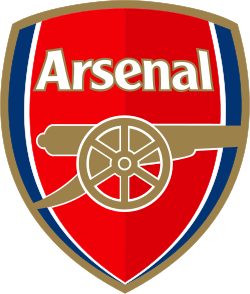

Arsenal Squad 25/26

Home: News
/
Players
/
Trophies
/
Fixtures
/
History
/
Quiz
First Team Squad
Goalkeepers
13. Kepa Arrizabalaga
1. David Raya
Defenders
2. William Saliba
3. Cristhian Mosquera
4. Ben White
5. Piero Hincapié
6. Gabriel Magalhães
12. Jurrien Timber
33. Riccardo Calafiori
49. Myles Lewis-Skelly
Midfielders
8. Martin Odegaard
16. Christian Norgaard
22. Ethan Nwaneri
23. Mikel Merino
36. Martin Zubimendi
41. Declan Rice
Forwards
7. Bukayo Saka
9. Gabriel Jesus
10. Eberechi Eze
11. Gabriel Martinelli
14. Viktor Gyokeres
19. Leandro Trossard
20. Noni Madueke
29. Kai Havertz